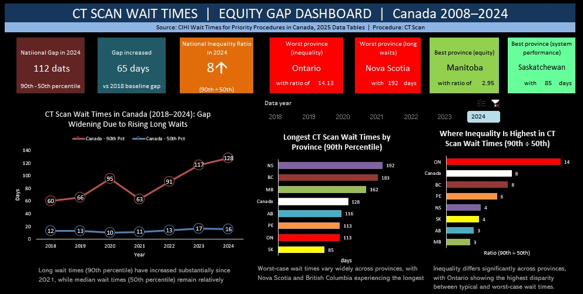
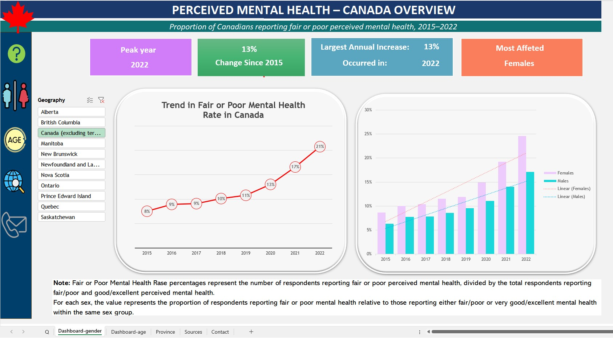

View Dashboard Videos
This page presents selected dashboard demo videos. Each box includes a preview image and a short explanation. Click any card to open the related YouTube video in a new tab.

Healthcare Analytics
CT Scan Wait Time Equity Dashboard
A short dashboard video showing inequality in CT scan wait times using percentile-based measures and province-level comparisons.
Open YouTube video →

Survey Dashboard
Mental Health Survey Dashboard
A dashboard video summarizing survey results and response patterns through interactive charts and indicators.
Open YouTube video →
Each dashboard video highlights a specific analytical problem, the approach taken, and key insights derived from the data.
Click on any card to view the full demonstration on YouTube.